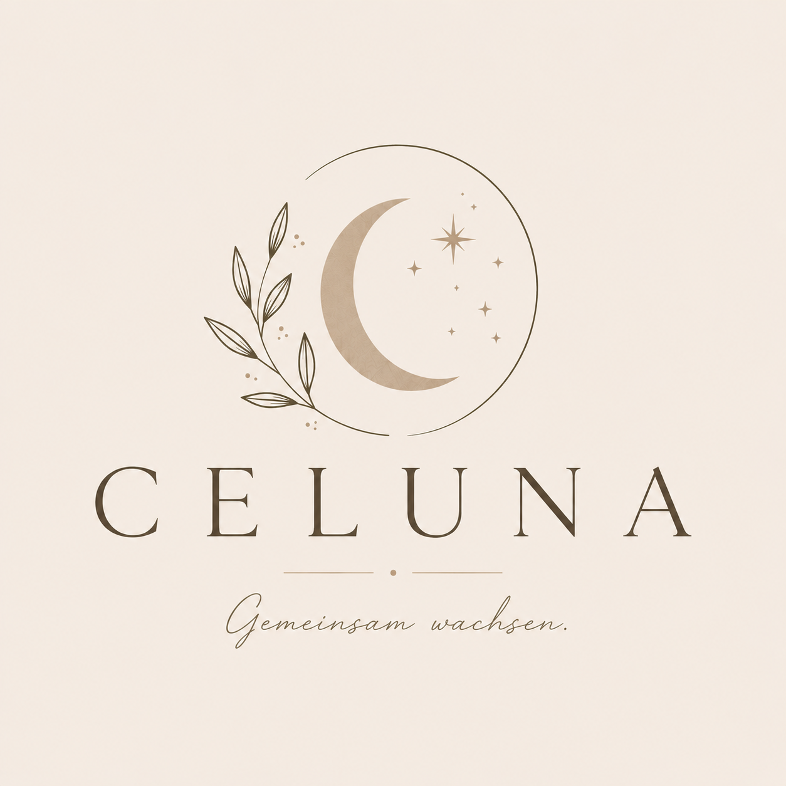

Mutkreis
Sag in einer kleinen Situation bewusst, was du bevorzugst.
CELUNA
Heute
C
Profil
Celuna
Emailadresse
-
Geburtsdatum
-
Gemeinsam wachsen
Dein Raum für Mut, Nähe und echte Verbindung.
Erstelle dein Profil und finde tägliche Impulse sowie kleine Begegnungen, die zu deinem Leben passen.
Fragebogen
Einmal einrichten, dann startet Celuna mit deinem Mond.
Wähle aus, was sich für dich stimmig anfühlt. Daraus entstehen tägliche Impulse, Begegnungsvorschläge und dein Passungsprofil.
1 von 5
Was möchtest du stärken?
2 von 5
Wie möchtest du Verbindung aufbauen?
3 von 5
Welche Begegnungen passen zu dir?
4 von 5
Was verbindet dich gern mit anderen?
5 von 5
Was hilft dir beim Dranbleiben?
Tagesmond
Heute ein Stück näher.
33%
gefüllt
Fokus
Eine kleine Handlung zählt mehr als perfekte Motivation.
KI Vorschlag
Wie darf Celuna deinen Tag dosieren?
Heute gewählt
Normal
Verbindung
Lächle einer Person offen zu oder schreibe eine kurze Nachricht.Selbstkontakt
Wähle 8 Minuten: Atemübung, Journaling oder stille Meditation.Monatsmond
Juli
83%
Passung
Dein Kreis diese Woche
3 Frauen, ein ruhiger Ort, ein vorbereiteter Einstieg.
Celuna schlägt nicht endlos Profile vor, sondern kleine Begegnungen mit klarem Rahmen.
Nächstes Format
Freitag
Spaziergang mit Gesprächskarten
Für Frauen, die Verbindung gern in Bewegung erleben. Start und Route sind vorbereitet, die Gruppe trifft sich eigenständig.
3-4 Frauen
45 Minuten
öffentlicher Ort
Treffenraum
Spaziergang mit Gesprächskarten
Ankommen
Legt eure Handys weg und nehmt euch einen ruhigen Startmoment.
ähnliches Verbindungstempo
Interesse an Natur und ruhigen Gesprächen
kleine Gruppe statt offenes Event
Weitere passende Kreise
Fr
18:30
Spaziergang mit Gesprächskarten
3 passende Menschen · ruhig · 45 Minuten
So
11:00
Café-Kreis am Sonntag
4 passende Menschen · kreativ · 60 Minuten
Di
19:15
Online Journaling zu zweit
1 Match · sanfter Einstieg · 25 Minuten
Abendritual
Was hat dich heute ein kleines Stück geöffnet?
Tägliche Frage
Momente
0
Streak
0 Tage
Gespeicherte Momente